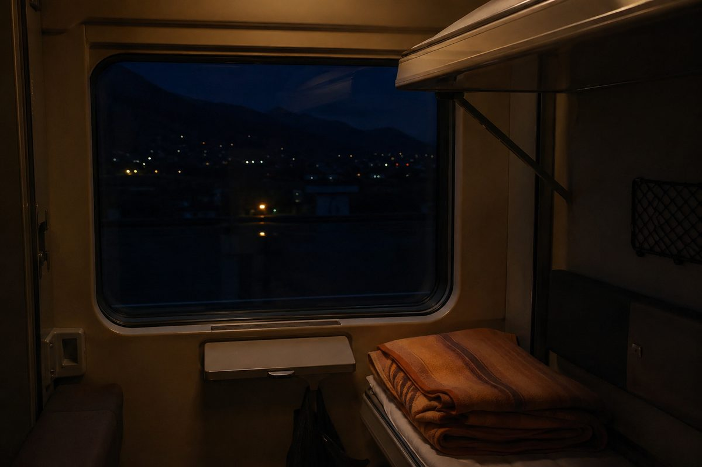
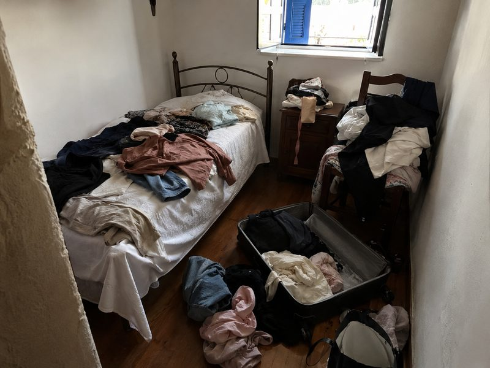
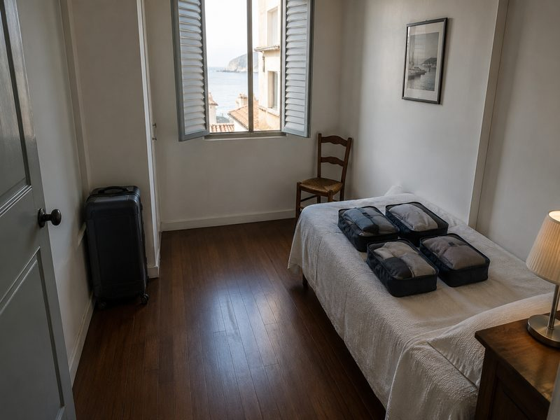

Take the slower route: Europe is better when the journey counts
The quickest route can leave you arriving tired, missing the scenery and treating a memorable part of Europe as dead time. Slow travel works when the ferry crossing, sleeper train or road itself gives you something worth stopping for.
The short version
- Choose a ferry when the crossing gives you daylight, deck space or a useful overnight leg rather than simply replacing a flight.
- Take a night train only when arrival time and sleep quality make sense; a cabin that saves one hotel night is not useful if you reach your destination exhausted.
- For a drive, build around one or two worthwhile stops and keep the final arrival simple, because a beautiful route becomes stressful when parking and late buses are ignored.
- In autumn, check daylight, the last local bus and seasonal opening hours before committing to a small coastal town.
As an Amazon Associate I earn from qualifying purchases. Links below are affiliate links (#ad) - they cost you nothing extra. Nothing here is a paid placement, and no brand sees this page before it goes up.
Pick the route for what happens between departure and arrival
A ferry earns its place when the crossing is part of the experience rather than an awkward interruption. A daytime sailing can turn a transfer into sea views and a proper meal, while a night ferry can save one hotel night but may cost about two hours of sleep once boarding, cabin settling and disembarkation are included; compare that trade-off with your next morning's plans.
Night trains make more sense when you can arrive early enough to use the day and avoid changing trains in the middle of the night. Do not choose one simply because it is called a sleeper: check whether your actual itinerary gives you a bed or a seat, and whether the arrival leaves enough time to reach your accommodation before its stated check-in window.


Autumn rewards slower routes only when you plan the edges
A coastal stop can be excellent in autumn because you can structure the day around walking, food and changing weather rather than trying to fit every sight into daylight. The catch is transport: in smaller towns, the last bus is often before 22:00, so a dinner reservation at 21:00 can quietly turn a car-free itinerary into an expensive taxi problem.
Driving gives you more control, but it does not make every scenic road a good slow-travel choice. If your route requires more than 90 minutes of backtracking for one viewpoint, the photograph may not justify the lost afternoon; choose a town where the harbour, old centre and evening meal are walkable once you park.
Three checks prevent a beautiful itinerary becoming a bad one
Check the last bus, not the first. Look up the final useful departure from your coastal stop and leave at least 30 minutes of slack before it; arriving for the first morning connection is easy, while missing the final service can dictate your entire evening.
Check the daylight before choosing the drive. For a scenic road, identify the point you most want to see and work backwards from sunset, leaving enough time to park and walk rather than treating the driving time as the whole excursion.
Check the luggage before choosing the cabin. Measure your packed case against the operator's published limits before buying anything, because a compact bag that fits beside your seat is more useful on a train or ferry than luggage that forces you into a separate storage arrangement.
What we would actually buy

Compression packing cubes
Compression packing cubes can keep several days of clothing contained when you are moving between ferries, trains and small rooms rather than unpacking fully at each stop. Before buying, check the cube dimensions against your case and the amount of clothing you normally carry; compression only helps if the packed shape still fits comfortably. They are not for travellers who prefer to carry almost nothing or who do not want to organise clothes by category.
Best for: travellers who pack light and stay organised
Shop on Amazon →paid link
Hardside cabin case
A hardside cabin case suits a trip where you repeatedly move luggage through stations, ferry terminals and narrow accommodation corridors, because a compact case is easier to manage than a large checked bag. Before buying, check the case dimensions against every operator's cabin allowance on your route rather than assuming one limit applies across Europe. It is not for travellers whose itinerary includes long stretches of uneven walking where carrying a wheeled case is awkward.
Best for: short trips with a compact cabin bag
Shop case on Amazon →paid link
10,000mAh 22.5W power bank
A 10,000mAh 22.5W power bank addresses a practical slow-travel problem: keeping a phone available for rail tickets, maps, translation and last-bus information during long transfers. Before buying, check that its capacity and charging output suit your devices and that you can carry it according to the transport operator's current rules. It is not necessary for travellers who reliably have access to charging and do not depend on their phone for navigation or tickets.
Best for: travellers needing reliable phone power onderweg
Shop on Amazon →paid linkIf you only do one thing
First, choose the journey you would actually enjoy repeating, then check the final bus, daylight and luggage limits before booking it. Once those constraints work, build the stops around the route rather than trying to make the route disappear.
How we choose
We look for pieces that change how a small room works, not the cheapest option and not the most photographed one. Everything here has to survive a rental: no drilling, no permanent fittings, nothing that needs a second person to install.
Room images on this site are our own illustrations, not photographs of the products. We link to the retailer so you can see the real item.
Written and selected by Rooms and Roads · Updated August 2026 · links checked August 2026